Hypergeometric functions¶
Common hypergeometric series¶
For convenience, most of the hypergeometric series of low order are
provided as standalone functions. They can equivalently be evaluated using
hyper(). As will be demonstrated further in the individual docstrings,
all the following functions implement analytic continuations and/or asymptotic
expansions with respect to the argument  , thereby permitting evaluation
anywhere in the complex plane. Functions of higher degree can be computed
via hyper(), but generally only in rapidly convergent instances.
, thereby permitting evaluation
anywhere in the complex plane. Functions of higher degree can be computed
via hyper(), but generally only in rapidly convergent instances.
hyp0f1()¶
- mpmath.hyp0f1(a, z)¶
Gives the hypergeometric function
 , sometimes known as the
confluent limit function, defined as
, sometimes known as the
confluent limit function, defined as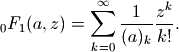
This function satisfies the differential equation 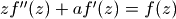, and is related to the Bessel function of the first kind (see besselj()).
hyp0f1(a,z) is equivalent to hyper([],[a],z); see documentation for hyper() for more information.
Examples
Evaluation for arbitrary arguments:
>>> from mpmath import * >>> mp.dps = 25; mp.pretty = True >>> hyp0f1(2, 0.25) 1.130318207984970054415392 >>> hyp0f1((1,2), 1234567) 6.27287187546220705604627e+964 >>> hyp0f1(3+4j, 1000000j) (3.905169561300910030267132e+606 + 3.807708544441684513934213e+606j)
Evaluation is supported for arbitrarily large values of
,
using asymptotic expansions:>>> hyp0f1(1, 10**50) 2.131705322874965310390701e+8685889638065036553022565 >>> hyp0f1(1, -10**50) 1.115945364792025420300208e-13
Verifying the differential equation:
>>> a = 2.5 >>> f = lambda z: hyp0f1(a,z) >>> for z in [0, 10, 3+4j]: ... chop(z*diff(f,z,2) + a*diff(f,z) - f(z)) ... 0.0 0.0 0.0
hyp1f1()¶
- mpmath.hyp1f1(a, b, z)¶
Gives the confluent hypergeometric function of the first kind,
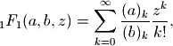
also known as Kummer’s function and sometimes denoted by 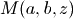. This function gives one solution to the confluent (Kummer’s) differential equation
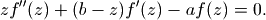
A second solution is given by the
 function; see hyperu().
Solutions are also given in an alternate form by the Whittaker
functions (whitm(), whitw()).
function; see hyperu().
Solutions are also given in an alternate form by the Whittaker
functions (whitm(), whitw()).hyp1f1(a,b,z) is equivalent to hyper([a],[b],z); see documentation for hyper() for more information.
Examples
Evaluation for real and complex values of the argument
, with
fixed parameters 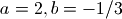:>>> from mpmath import * >>> mp.dps = 25; mp.pretty = True >>> hyp1f1(2, (-1,3), 3.25) -2815.956856924817275640248 >>> hyp1f1(2, (-1,3), -3.25) -1.145036502407444445553107 >>> hyp1f1(2, (-1,3), 1000) -8.021799872770764149793693e+441 >>> hyp1f1(2, (-1,3), -1000) 0.000003131987633006813594535331 >>> hyp1f1(2, (-1,3), 100+100j) (-3.189190365227034385898282e+48 - 1.106169926814270418999315e+49j)
Parameters may be complex:
>>> hyp1f1(2+3j, -1+j, 10j) (261.8977905181045142673351 + 160.8930312845682213562172j)
Arbitrarily large values of
are supported:>>> hyp1f1(3, 4, 10**20) 3.890569218254486878220752e+43429448190325182745 >>> hyp1f1(3, 4, -10**20) 6.0e-60 >>> hyp1f1(3, 4, 10**20*j) (-1.935753855797342532571597e-20 - 2.291911213325184901239155e-20j)
Verifying the differential equation:
>>> a, b = 1.5, 2 >>> f = lambda z: hyp1f1(a,b,z) >>> for z in [0, -10, 3, 3+4j]: ... chop(z*diff(f,z,2) + (b-z)*diff(f,z) - a*f(z)) ... 0.0 0.0 0.0 0.0
An integral representation:
>>> a, b = 1.5, 3 >>> z = 1.5 >>> hyp1f1(a,b,z) 2.269381460919952778587441 >>> g = lambda t: exp(z*t)*t**(a-1)*(1-t)**(b-a-1) >>> gammaprod([b],[a,b-a])*quad(g, [0,1]) 2.269381460919952778587441
hyp1f2()¶
- mpmath.hyp1f2(a1, b1, b2, z)¶
Gives the hypergeometric function 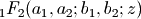. The call hyp1f2(a1,b1,b2,z) is equivalent to hyper([a1],[b1,b2],z).
Evaluation works for complex and arbitrarily large arguments:
>>> from mpmath import * >>> mp.dps = 25; mp.pretty = True >>> a, b, c = 1.5, (-1,3), 2.25 >>> hyp1f2(a, b, c, 10**20) -1.159388148811981535941434e+8685889639 >>> hyp1f2(a, b, c, -10**20) -12.60262607892655945795907 >>> hyp1f2(a, b, c, 10**20*j) (4.237220401382240876065501e+6141851464 - 2.950930337531768015892987e+6141851464j) >>> hyp1f2(2+3j, -2j, 0.5j, 10-20j) (135881.9905586966432662004 - 86681.95885418079535738828j)
hyp2f0()¶
- mpmath.hyp2f0(a, b, z)¶
Gives the hypergeometric function 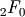, defined formally by the series
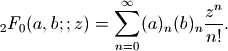
This series usually does not converge. For small enough
, it can be viewed
as an asymptotic series that may be summed directly with an appropriate
truncation. When this is not the case, hyp2f0() gives a regularized sum,
or equivalently, it uses a representation in terms of the
hypergeometric U function [1]. The series also converges when either  or
or  is a nonpositive integer, as it then terminates into a polynomial
after 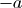 or 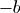 terms.
is a nonpositive integer, as it then terminates into a polynomial
after 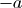 or 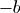 terms.Examples
Evaluation is supported for arbitrary complex arguments:
>>> from mpmath import * >>> mp.dps = 25; mp.pretty = True >>> hyp2f0((2,3), 1.25, -100) 0.07095851870980052763312791 >>> hyp2f0((2,3), 1.25, 100) (-0.03254379032170590665041131 + 0.07269254613282301012735797j) >>> hyp2f0(-0.75, 1-j, 4j) (-0.3579987031082732264862155 - 3.052951783922142735255881j)
Even with real arguments, the regularized value of 2F0 is often complex-valued, but the imaginary part decreases exponentially as 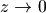. In the following example, the first call uses complex evaluation while the second has a small enough
to evaluate using the direct series and thus the returned value
is strictly real (this should be taken to indicate that the imaginary
part is less than eps):>>> mp.dps = 15 >>> hyp2f0(1.5, 0.5, 0.05) (1.04166637647907 + 8.34584913683906e-8j) >>> hyp2f0(1.5, 0.5, 0.0005) 1.00037535207621
The imaginary part can be retrieved by increasing the working precision:
>>> mp.dps = 80 >>> nprint(hyp2f0(1.5, 0.5, 0.009).imag) 1.23828e-46
In the polynomial case (the series terminating), 2F0 can evaluate exactly:
>>> mp.dps = 15 >>> hyp2f0(-6,-6,2) 291793.0 >>> identify(hyp2f0(-2,1,0.25)) '(5/8)'
The coefficients of the polynomials can be recovered using Taylor expansion:
>>> nprint(taylor(lambda x: hyp2f0(-3,0.5,x), 0, 10)) [1.0, -1.5, 2.25, -1.875, 0.0, 0.0, 0.0, 0.0, 0.0, 0.0, 0.0] >>> nprint(taylor(lambda x: hyp2f0(-4,0.5,x), 0, 10)) [1.0, -2.0, 4.5, -7.5, 6.5625, 0.0, 0.0, 0.0, 0.0, 0.0, 0.0]
hyp2f1()¶
- mpmath.hyp2f1(a, b, c, z)¶
Gives the Gauss hypergeometric function
 (often simply referred to as
the hypergeometric function), defined for
(often simply referred to as
the hypergeometric function), defined for  as
as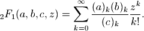
and for 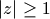 by analytic continuation, with a branch cut on 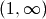 when necessary.
Special cases of this function include many of the orthogonal polynomials as well as the incomplete beta function and other functions. Properties of the Gauss hypergeometric function are documented comprehensively in many references, for example Abramowitz & Stegun, section 15.
The implementation supports the analytic continuation as well as evaluation close to the unit circle where 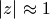. The syntax hyp2f1(a,b,c,z) is equivalent to hyper([a,b],[c],z).
Examples
Evaluation with
inside, outside and on the unit circle, for
fixed parameters:>>> from mpmath import * >>> mp.dps = 25; mp.pretty = True >>> hyp2f1(2, (1,2), 4, 0.75) 1.303703703703703703703704 >>> hyp2f1(2, (1,2), 4, -1.75) 0.7431290566046919177853916 >>> hyp2f1(2, (1,2), 4, 1.75) (1.418075801749271137026239 - 1.114976146679907015775102j) >>> hyp2f1(2, (1,2), 4, 1) 1.6 >>> hyp2f1(2, (1,2), 4, -1) 0.8235498012182875315037882 >>> hyp2f1(2, (1,2), 4, j) (0.9144026291433065674259078 + 0.2050415770437884900574923j) >>> hyp2f1(2, (1,2), 4, 2+j) (0.9274013540258103029011549 + 0.7455257875808100868984496j) >>> hyp2f1(2, (1,2), 4, 0.25j) (0.9931169055799728251931672 + 0.06154836525312066938147793j)
Evaluation with complex parameter values:
>>> hyp2f1(1+j, 0.75, 10j, 1+5j) (0.8834833319713479923389638 + 0.7053886880648105068343509j)
Evaluation with 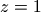:
>>> hyp2f1(-2.5, 3.5, 1.5, 1) 0.0 >>> hyp2f1(-2.5, 3, 4, 1) 0.06926406926406926406926407 >>> hyp2f1(2, 3, 4, 1) +inf
Evaluation for huge arguments:
>>> hyp2f1((-1,3), 1.75, 4, '1e100') (7.883714220959876246415651e+32 + 1.365499358305579597618785e+33j) >>> hyp2f1((-1,3), 1.75, 4, '1e1000000') (7.883714220959876246415651e+333332 + 1.365499358305579597618785e+333333j) >>> hyp2f1((-1,3), 1.75, 4, '1e1000000j') (1.365499358305579597618785e+333333 - 7.883714220959876246415651e+333332j)
An integral representation:
>>> a,b,c,z = -0.5, 1, 2.5, 0.25 >>> g = lambda t: t**(b-1) * (1-t)**(c-b-1) * (1-t*z)**(-a) >>> gammaprod([c],[b,c-b]) * quad(g, [0,1]) 0.9480458814362824478852618 >>> hyp2f1(a,b,c,z) 0.9480458814362824478852618
Verifying the hypergeometric differential equation:
>>> f = lambda z: hyp2f1(a,b,c,z) >>> chop(z*(1-z)*diff(f,z,2) + (c-(a+b+1)*z)*diff(f,z) - a*b*f(z)) 0.0
hyp2f2()¶
- mpmath.hyp2f2(a1, a2, b1, b2, z)¶
Gives the hypergeometric function 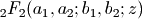. The call hyp2f2(a1,a2,b1,b2,z) is equivalent to hyper([a1,a2],[b1,b2],z).
Evaluation works for complex and arbitrarily large arguments:
>>> from mpmath import * >>> mp.dps = 25; mp.pretty = True >>> a, b, c, d = 1.5, (-1,3), 2.25, 4 >>> hyp2f2(a, b, c, d, 10**20) -5.275758229007902299823821e+43429448190325182663 >>> hyp2f2(a, b, c, d, -10**20) 2561445.079983207701073448 >>> hyp2f2(a, b, c, d, 10**20*j) (2218276.509664121194836667 - 1280722.539991603850462856j) >>> hyp2f2(2+3j, -2j, 0.5j, 4j, 10-20j) (80500.68321405666957342788 - 20346.82752982813540993502j)
hyp2f3()¶
- mpmath.hyp2f3(a1, a2, b1, b2, b3, z)¶
Gives the hypergeometric function 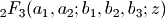. The call hyp2f3(a1,a2,b1,b2,b3,z) is equivalent to hyper([a1,a2],[b1,b2,b3],z).
Evaluation works for arbitrarily large arguments:
>>> from mpmath import * >>> mp.dps = 25; mp.pretty = True >>> a1,a2,b1,b2,b3 = 1.5, (-1,3), 2.25, 4, (1,5) >>> hyp2f3(a1,a2,b1,b2,b3,10**20) -4.169178177065714963568963e+8685889590 >>> hyp2f3(a1,a2,b1,b2,b3,-10**20) 7064472.587757755088178629 >>> hyp2f3(a1,a2,b1,b2,b3,10**20*j) (-5.163368465314934589818543e+6141851415 + 1.783578125755972803440364e+6141851416j) >>> hyp2f3(2+3j, -2j, 0.5j, 4j, -1-j, 10-20j) (-2280.938956687033150740228 + 13620.97336609573659199632j) >>> hyp2f3(2+3j, -2j, 0.5j, 4j, -1-j, 10000000-20000000j) (4.849835186175096516193e+3504 - 3.365981529122220091353633e+3504j)
hyp3f2()¶
- mpmath.hyp3f2(a1, a2, a3, b1, b2, z)¶
Gives the generalized hypergeometric function 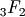, defined for
as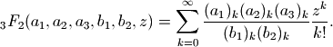
and for by analytic continuation. The analytic structure of this function is similar to that of
, generally with a singularity at
and a branch cut on .Evaluation is supported inside, on, and outside the circle of convergence 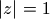:
>>> from mpmath import * >>> mp.dps = 25; mp.pretty = True >>> hyp3f2(1,2,3,4,5,0.25) 1.083533123380934241548707 >>> hyp3f2(1,2+2j,3,4,5,-10+10j) (0.1574651066006004632914361 - 0.03194209021885226400892963j) >>> hyp3f2(1,2,3,4,5,-10) 0.3071141169208772603266489 >>> hyp3f2(1,2,3,4,5,10) (-0.4857045320523947050581423 - 0.5988311440454888436888028j) >>> hyp3f2(0.25,1,1,2,1.5,1) 1.157370995096772047567631 >>> (8-pi-2*ln2)/3 1.157370995096772047567631 >>> hyp3f2(1+j,0.5j,2,1,-2j,-1) (1.74518490615029486475959 + 0.1454701525056682297614029j) >>> hyp3f2(1+j,0.5j,2,1,-2j,sqrt(j)) (0.9829816481834277511138055 - 0.4059040020276937085081127j) >>> hyp3f2(-3,2,1,-5,4,1) 1.41 >>> hyp3f2(-3,2,1,-5,4,2) 2.12
Evaluation very close to the unit circle:
>>> hyp3f2(1,2,3,4,5,'1.0001') (1.564877796743282766872279 - 3.76821518787438186031973e-11j) >>> hyp3f2(1,2,3,4,5,'1+0.0001j') (1.564747153061671573212831 + 0.0001305757570366084557648482j) >>> hyp3f2(1,2,3,4,5,'0.9999') 1.564616644881686134983664 >>> hyp3f2(1,2,3,4,5,'-0.9999') 0.7823896253461678060196207
Note: evaluation for 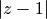 small can currently be inaccurate or slow for some parameter combinations.
For various parameter combinations, admits representation in terms of hypergeometric functions of lower degree, or in terms of simpler functions:
>>> for a, b, z in [(1,2,-1), (2,0.5,1)]: ... hyp2f1(a,b,a+b+0.5,z)**2 ... hyp3f2(2*a,a+b,2*b,a+b+0.5,2*a+2*b,z) ... 0.4246104461966439006086308 0.4246104461966439006086308 7.111111111111111111111111 7.111111111111111111111111 >>> z = 2+3j >>> hyp3f2(0.5,1,1.5,2,2,z) (0.7621440939243342419729144 + 0.4249117735058037649915723j) >>> 4*(pi-2*ellipe(z))/(pi*z) (0.7621440939243342419729144 + 0.4249117735058037649915723j)
Generalized hypergeometric functions¶
hyper()¶
- mpmath.hyper(a_s, b_s, z)¶
Evaluates the generalized hypergeometric function
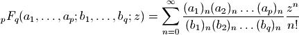
where 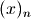 denotes the rising factorial (see rf()).
The parameters lists a_s and b_s may contain integers, real numbers, complex numbers, as well as exact fractions given in the form of tuples
 . hyper() is optimized to handle
integers and fractions more efficiently than arbitrary
floating-point parameters (since rational parameters are by
far the most common).
. hyper() is optimized to handle
integers and fractions more efficiently than arbitrary
floating-point parameters (since rational parameters are by
far the most common).Examples
Verifying that hyper() gives the sum in the definition, by comparison with nsum():
>>> from mpmath import * >>> mp.dps = 25; mp.pretty = True >>> a,b,c,d = 2,3,4,5 >>> x = 0.25 >>> hyper([a,b],[c,d],x) 1.078903941164934876086237 >>> fn = lambda n: rf(a,n)*rf(b,n)/rf(c,n)/rf(d,n)*x**n/fac(n) >>> nsum(fn, [0, inf]) 1.078903941164934876086237
The parameters can be any combination of integers, fractions, floats and complex numbers:
>>> a, b, c, d, e = 1, (-1,2), pi, 3+4j, (2,3) >>> x = 0.2j >>> hyper([a,b],[c,d,e],x) (0.9923571616434024810831887 - 0.005753848733883879742993122j) >>> b, e = -0.5, mpf(2)/3 >>> fn = lambda n: rf(a,n)*rf(b,n)/rf(c,n)/rf(d,n)/rf(e,n)*x**n/fac(n) >>> nsum(fn, [0, inf]) (0.9923571616434024810831887 - 0.005753848733883879742993122j)
The 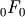 and 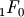 series are just elementary functions:
>>> a, z = sqrt(2), +pi >>> hyper([],[],z) 23.14069263277926900572909 >>> exp(z) 23.14069263277926900572909 >>> hyper([a],[],z) (-0.09069132879922920160334114 + 0.3283224323946162083579656j) >>> (1-z)**(-a) (-0.09069132879922920160334114 + 0.3283224323946162083579656j)
If any
 coefficient is a nonpositive integer, the series terminates
into a finite polynomial:
coefficient is a nonpositive integer, the series terminates
into a finite polynomial:>>> hyper([1,1,1,-3],[2,5],1) 0.7904761904761904761904762 >>> identify(_) '(83/105)'
If any
 is a nonpositive integer, the function is undefined (unless the
series terminates before the division by zero occurs):
is a nonpositive integer, the function is undefined (unless the
series terminates before the division by zero occurs):>>> hyper([1,1,1,-3],[-2,5],1) Traceback (most recent call last): ... ZeroDivisionError: pole in hypergeometric series >>> hyper([1,1,1,-1],[-2,5],1) 1.1
Except for polynomial cases, the radius of convergence 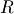 of the hypergeometric series is either 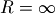 (if
 ), 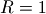 (if 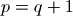), or
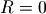 (if 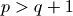).
), 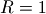 (if 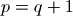), or
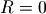 (if 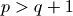).The analytic continuations of the functions with , i.e.
,
, 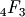, etc, are all implemented and therefore these functions
can be evaluated for . The shortcuts hyp2f1(), hyp3f2()
are available to handle the most common cases (see their documentation),
but functions of higher degree are also supported via hyper():>>> hyper([1,2,3,4], [5,6,7], 1) # 4F3 at finite-valued branch point 1.141783505526870731311423 >>> hyper([4,5,6,7], [1,2,3], 1) # 4F3 at pole +inf >>> hyper([1,2,3,4,5], [6,7,8,9], 10) # 5F4 (1.543998916527972259717257 - 0.5876309929580408028816365j) >>> hyper([1,2,3,4,5,6], [7,8,9,10,11], 1j) # 6F5 (0.9996565821853579063502466 + 0.0129721075905630604445669j)
Please note that, as currently implemented, evaluation of 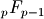 with 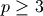 may be slow or inaccurate when is small, for some parameter values.
When , hyper computes the (iterated) Borel sum of the divergent series. For the Borel sum has an analytic solution and can be computed efficiently (see hyp2f0()). For higher degrees, the functions is evaluated first by attempting to sum it directly as an asymptotic series (this only works for tiny
 ), and then by evaluating the Borel
regularized sum using numerical integration. Except for
special parameter combinations, this can be extremely slow.
), and then by evaluating the Borel
regularized sum using numerical integration. Except for
special parameter combinations, this can be extremely slow.>>> hyper([1,1], [], 0.5) # regularization of 2F0 (1.340965419580146562086448 + 0.8503366631752726568782447j) >>> hyper([1,1,1,1], [1], 0.5) # regularization of 4F1 (1.108287213689475145830699 + 0.5327107430640678181200491j)
With the following magnitude of argument, the asymptotic series for 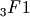 gives only a few digits. Using Borel summation, hyper can produce a value with full accuracy:
>>> mp.dps = 15 >>> hyper([2,0.5,4], [5.25], '0.08', force_series=True) Traceback (most recent call last): ... NoConvergence: Hypergeometric series converges too slowly. Try increasing maxterms. >>> hyper([2,0.5,4], [5.25], '0.08', asymp_tol=1e-4) 1.0725535790737 >>> hyper([2,0.5,4], [5.25], '0.08') (1.07269542893559 + 5.54668863216891e-5j) >>> hyper([2,0.5,4], [5.25], '-0.08', asymp_tol=1e-4) 0.946344925484879 >>> hyper([2,0.5,4], [5.25], '-0.08') 0.946312503737771 >>> mp.dps = 25 >>> hyper([2,0.5,4], [5.25], '-0.08') 0.9463125037377662296700858
Note that with the positive
value, there is a complex part in the
correct result, which falls below the tolerance of the asymptotic series.
hypercomb()¶
- mpmath.hypercomb(ctx, function, params=[], discard_known_zeros=True, **kwargs)¶
Computes a weighted combination of hypergeometric functions
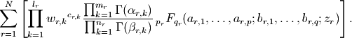
Typically the parameters are linear combinations of a small set of base parameters; hypercomb() permits computing a correct value in the case that some of the
 , 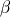, turn out to be
nonpositive integers, or if division by zero occurs for some 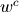,
assuming that there are opposing singularities that cancel out.
The limit is computed by evaluating the function with the base
parameters perturbed, at a higher working precision.
, 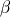, turn out to be
nonpositive integers, or if division by zero occurs for some 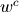,
assuming that there are opposing singularities that cancel out.
The limit is computed by evaluating the function with the base
parameters perturbed, at a higher working precision.The first argument should be a function that takes the perturbable base parameters params as input and returns
 tuples
(w, c, alpha, beta, a, b, z), where the coefficients w, c,
gamma factors alpha, beta, and hypergeometric coefficients
a, b each should be lists of numbers, and z should be a single
number.
tuples
(w, c, alpha, beta, a, b, z), where the coefficients w, c,
gamma factors alpha, beta, and hypergeometric coefficients
a, b each should be lists of numbers, and z should be a single
number.Examples
The following evaluates
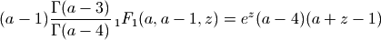
with 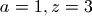. There is a zero factor, two gamma function poles, and the 1F1 function is singular; all singularities cancel out to give a finite value:
>>> from mpmath import * >>> mp.dps = 15; mp.pretty = True >>> hypercomb(lambda a: [([a-1],[1],[a-3],[a-4],[a],[a-1],3)], [1]) -180.769832308689 >>> -9*exp(3) -180.769832308689
Confluent U and Whittaker functions¶
hyperu()¶
- mpmath.hyperu(a, b, z)¶
Gives the Tricomi confluent hypergeometric function
, also known as
the Kummer or confluent hypergeometric function of the second kind. This
function gives a second linearly independent solution to the confluent
hypergeometric differential equation (the first is provided by  –
see hyp1f1()).
–
see hyp1f1()).Examples
Evaluation for arbitrary complex arguments:
>>> from mpmath import * >>> mp.dps = 25; mp.pretty = True >>> hyperu(2,3,4) 0.0625 >>> hyperu(0.25, 5, 1000) 0.1779949416140579573763523 >>> hyperu(0.25, 5, -1000) (0.1256256609322773150118907 - 0.1256256609322773150118907j)
The
function may be singular at  :
:>>> hyperu(1.5, 2, 0) +inf >>> hyperu(1.5, -2, 0) 0.1719434921288400112603671
Verifying the differential equation:
>>> a, b = 1.5, 2 >>> f = lambda z: hyperu(a,b,z) >>> for z in [-10, 3, 3+4j]: ... chop(z*diff(f,z,2) + (b-z)*diff(f,z) - a*f(z)) ... 0.0 0.0 0.0
An integral representation:
>>> a,b,z = 2, 3.5, 4.25 >>> hyperu(a,b,z) 0.06674960718150520648014567 >>> quad(lambda t: exp(-z*t)*t**(a-1)*(1+t)**(b-a-1),[0,inf]) / gamma(a) 0.06674960718150520648014567
whitm()¶
- mpmath.whitm(k, m, z)¶
Evaluates the Whittaker function
 , which gives a solution
to the Whittaker differential equation
, which gives a solution
to the Whittaker differential equation
A second solution is given by whitw().
The Whittaker functions are defined in Abramowitz & Stegun, section 13.1. They are alternate forms of the confluent hypergeometric functions
and :
Examples
Evaluation for arbitrary real and complex arguments is supported:
>>> from mpmath import * >>> mp.dps = 25; mp.pretty = True >>> whitm(1, 1, 1) 0.7302596799460411820509668 >>> whitm(1, 1, -1) (0.0 - 1.417977827655098025684246j) >>> whitm(j, j/2, 2+3j) (3.245477713363581112736478 - 0.822879187542699127327782j) >>> whitm(2, 3, 100000) 4.303985255686378497193063e+21707
Evaluation at zero:
>>> whitm(1,-1,0); whitm(1,-0.5,0); whitm(1,0,0) +inf nan 0.0
We can verify that whitm() numerically satisfies the differential equation for arbitrarily chosen values:
>>> k = mpf(0.25) >>> m = mpf(1.5) >>> f = lambda z: whitm(k,m,z) >>> for z in [-1, 2.5, 3, 1+2j]: ... chop(diff(f,z,2) + (-0.25 + k/z + (0.25-m**2)/z**2)*f(z)) ... 0.0 0.0 0.0 0.0
An integral involving both whitm() and whitmw(), verifying evaluation along the real axis:
>>> quad(lambda x: exp(-x)*whitm(3,2,x)*whitw(1,-2,x), [0,inf]) 3.438869842576800225207341 >>> 128/(21*sqrt(pi)) 3.438869842576800225207341
whitw()¶
- mpmath.whitw(k, m, z)¶
Evaluates the Whittaker function
 , which gives a second
solution to the Whittaker differential equation. (See whitm().)
, which gives a second
solution to the Whittaker differential equation. (See whitm().)Examples
Evaluation for arbitrary real and complex arguments is supported:
>>> from mpmath import * >>> mp.dps = 25; mp.pretty = True >>> whitw(1, 1, 1) 1.19532063107581155661012 >>> whitw(1, 1, -1) (-0.9424875979222187313924639 - 0.2607738054097702293308689j) >>> whitw(j, j/2, 2+3j) (0.1782899315111033879430369 - 0.01609578360403649340169406j) >>> whitw(2, 3, 100000) 1.887705114889527446891274e-21705 >>> whitw(-1, -1, 100) 1.905250692824046162462058e-24
Evaluation at zero:
>>> for m in [-1, -0.5, 0, 0.5, 1]: ... whitw(1, m, 0) ... +inf nan 0.0 nan +inf
We can verify that whitw() numerically satisfies the differential equation for arbitrarily chosen values:
>>> k = mpf(0.25) >>> m = mpf(1.5) >>> f = lambda z: whitw(k,m,z) >>> for z in [-1, 2.5, 3, 1+2j]: ... chop(diff(f,z,2) + (-0.25 + k/z + (0.25-m**2)/z**2)*f(z)) ... 0.0 0.0 0.0 0.0
Meijer G-function¶
meijerg()¶
- mpmath.meijerg(a_s, b_s, z, r=1, **kwargs)¶
Evaluates the Meijer G-function, defined as
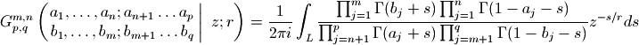
for an appropriate choice of the contour 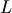 (see references).
There are
 elements 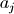.
The argument a_s should be a pair of lists, the first containing the
elements 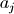.
The argument a_s should be a pair of lists, the first containing the
 elements 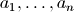 and the second containing
the 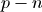 elements 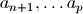.
elements 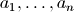 and the second containing
the 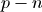 elements 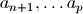.There are
 elements 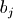.
The argument b_s should be a pair of lists, the first containing the
elements 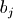.
The argument b_s should be a pair of lists, the first containing the
 elements 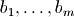 and the second containing
the elements .
elements 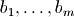 and the second containing
the elements .The implicit tuple constitutes the order or degree of the Meijer G-function, and is determined by the lengths of the coefficient vectors. Confusingly, the indices in this tuple appear in a different order from the coefficients, but this notation is standard. The many examples given below should hopefully clear up any potential confusion.
Algorithm
The Meijer G-function is evaluated as a combination of hypergeometric series. There are two versions of the function, which can be selected with the optional series argument.
series=1 uses a sum of
functions of series=2 uses a sum of
functions of 
The default series is chosen based on the degree and
in order
to be consistent with Mathematica’s. This definition of the Meijer G-function
has a discontinuity at for some orders, which can
be avoided by explicitly specifying a series.Keyword arguments are forwarded to hypercomb().
Examples
Many standard functions are special cases of the Meijer G-function (possibly rescaled and/or with branch cut corrections). We define some test parameters:
>>> from mpmath import * >>> mp.dps = 25; mp.pretty = True >>> a = mpf(0.75) >>> b = mpf(1.5) >>> z = mpf(2.25)
The exponential function:
>>> meijerg([[],[]], [[0],[]], -z) 9.487735836358525720550369 >>> exp(z) 9.487735836358525720550369
The natural logarithm:
>>> meijerg([[1,1],[]], [[1],[0]], z) 1.178654996341646117219023 >>> log(1+z) 1.178654996341646117219023
A rational function:
>>> meijerg([[1,1],[]], [[1],[1]], z) 0.6923076923076923076923077 >>> z/(z+1) 0.6923076923076923076923077
The sine and cosine functions:
>>> meijerg([[],[]], [[0.5],[0]], (z/2)**2) 0.4389807929218676682296453 >>> sin(z)/sqrt(pi) 0.4389807929218676682296453 >>> meijerg([[],[]], [[0],[0.5]], (z/2)**2) -0.3544090145996275423331762 >>> cos(z)/sqrt(pi) -0.3544090145996275423331762
Bessel functions:
As the example with the Bessel I function shows, a branch factor is required for some arguments when inverting the square root.
>>> meijerg([[],[]], [[a/2],[-a/2]], (z/2)**2) 0.5059425789597154858527264 >>> besselj(a,z) 0.5059425789597154858527264 >>> meijerg([[],[(-a-1)/2]], [[a/2,-a/2],[(-a-1)/2]], (z/2)**2) 0.1853868950066556941442559 >>> bessely(a, z) 0.1853868950066556941442559 >>> meijerg([[],[]], [[a/2],[-a/2]], -(z/2)**2) (0.8685913322427653875717476 + 2.096964974460199200551738j) >>> (-z)**(a/2) / z**(a/2) * besseli(a, z) (0.8685913322427653875717476 + 2.096964974460199200551738j) >>> 0.5*meijerg([[],[]], [[a/2,-a/2],[]], (z/2)**2) 0.09334163695597828403796071 >>> besselk(a,z) 0.09334163695597828403796071
Error functions:
>>> meijerg([[],[a]], [[a-1,a-0.5],[]], z, 0.5) 0.00172839843123091957468712 >>> sqrt(pi) * z**(2*a-2) * erfc(z) 0.00172839843123091957468712
A Meijer G-function of higher degree, (1,1,2,3):
>>> meijerg([[a],[b]], [[a],[b,a-1]], z) 1.55984467443050210115617 >>> sin((b-a)*pi)/pi*(exp(z)-1)*z**(a-1) 1.55984467443050210115617
A Meijer G-function of still higher degree, (4,1,2,4), that can be expanded as a messy combination of exponential integrals:
>>> meijerg([[a],[2*b-a]], [[b,a,b-0.5,-1-a+2*b],[]], z) 0.3323667133658557271898061 >>> chop(4**(a-b+1)*sqrt(pi)*gamma(2*b-2*a)*z**a*\ ... expint(2*b-2*a, -2*sqrt(-z))*expint(2*b-2*a, 2*sqrt(-z))) 0.3323667133658557271898061
In the following case, different series give different values:
>>> chop(meijerg([[1],[0.25]],[[3],[0.5]],-2)) -0.06417628097442437076207337 >>> meijerg([[1],[0.25]],[[3],[0.5]],-2,series=1) 0.1428699426155117511873047 >>> chop(meijerg([[1],[0.25]],[[3],[0.5]],-2,series=2)) -0.06417628097442437076207337
References
Bilateral hypergeometric series¶
bihyper()¶
- mpmath.bihyper(a_s, b_s, z, **kwargs)¶
Evaluates the bilateral hypergeometric series
where, for direct convergence,
 and , although a
regularized sum exists more generally by considering the
bilateral series as a sum of two ordinary hypergeometric
functions. In order for the series to make sense, none of the
parameters may be integers.
and , although a
regularized sum exists more generally by considering the
bilateral series as a sum of two ordinary hypergeometric
functions. In order for the series to make sense, none of the
parameters may be integers.Examples
The value of at is given by Dougall’s formula:
>>> from mpmath import * >>> mp.dps = 25; mp.pretty = True >>> a,b,c,d = 0.5, 1.5, 2.25, 3.25 >>> bihyper([a,b],[c,d],1) -14.49118026212345786148847 >>> gammaprod([c,d,1-a,1-b,c+d-a-b-1],[c-a,d-a,c-b,d-b]) -14.49118026212345786148847
The regularized function can be expressed as the sum of one function and one
function:>>> a = mpf(0.25) >>> z = mpf(0.75) >>> bihyper([a], [], z) (0.2454393389657273841385582 + 0.2454393389657273841385582j) >>> hyper([a,1],[],z) + (hyper([1],[1-a],-1/z)-1) (0.2454393389657273841385582 + 0.2454393389657273841385582j) >>> hyper([a,1],[],z) + hyper([1],[2-a],-1/z)/z/(a-1) (0.2454393389657273841385582 + 0.2454393389657273841385582j)
References
- [Slater] (chapter 6: “Bilateral Series”, pp. 180-189)
- [Wikipedia] http://en.wikipedia.org/wiki/Bilateral_hypergeometric_series
Appell hypergeometric function of two variables¶
appellf1()¶
- mpmath.appellf1(a, b1, b2, c, x, y)¶
Gives the Appell F1 hypergeometric function of two variables,
This series is only generally convergent when and , although appellf1() can evaluate the continuation in many cases.
Examples
Evaluation is supported for real and complex parameters:
>>> from mpmath import * >>> mp.dps = 25; mp.pretty = True >>> appellf1(1,0,0.5,1,0.5,0.25) 1.154700538379251529018298 >>> appellf1(1,1+j,0.5,1,0.5,0.5j) (1.138403860350148085179415 + 1.510544741058517621110615j)
For some integer parameters, the F1 series reduces to a polynomial:
>>> appellf1(2,-4,-3,1,2,5) -816.0 >>> appellf1(-5,1,2,1,4,5) -20528.0
The analytic continuation with respect to either or , and sometimes with respect to both, can be evaluated:
>>> appellf1(2,3,4,5,100,0.5) (0.0006231042714165329279738662 + 0.0000005769149277148425774499857j) >>> appellf1('1.1', '0.3', '0.2+2j', '0.4', '0.2', 1.5+3j) (-0.1782604566893954897128702 + 0.002472407104546216117161499j) >>> appellf1(1,2,3,4,10,12) -0.07122993830066776374929313
For certain arguments, F1 reduces to an ordinary hypergeometric function:
>>> appellf1(1,2,3,5,0.5,0.25) 1.547902270302684019335555 >>> 4*hyp2f1(1,2,5,'1/3')/3 1.547902270302684019335555 >>> appellf1(1,2,3,4,0,1.5) (-1.717202506168937502740238 - 2.792526803190927323077905j) >>> hyp2f1(1,3,4,1.5) (-1.717202506168937502740238 - 2.792526803190927323077905j)
The Appell F1 function allows for closed-form evaluation of various integrals, such as any integral of the form :
>>> def integral(a,b,p,q,r,x1,x2): ... a,b,p,q,r,x1,x2 = map(mpmathify, [a,b,p,q,r,x1,x2]) ... f = lambda x: x**r * (x+a)**p * (x+b)**q ... def F(x): ... v = x**(r+1)/(r+1) * (a+x)**p * (b+x)**q ... v *= (1+x/a)**(-p) ... v *= (1+x/b)**(-q) ... v *= appellf1(r+1,-p,-q,2+r,-x/a,-x/b) ... return v ... print "Num. quad:", quad(f, [x1,x2]) ... print "Appell F1:", F(x2)-F(x1) ... >>> integral('1/5','4/3','-2','3','1/2',0,1) Num. quad: 9.073335358785776206576981 Appell F1: 9.073335358785776206576981 >>> integral('3/2','4/3','-2','3','1/2',0,1) Num. quad: 1.092829171999626454344678 Appell F1: 1.092829171999626454344678 >>> integral('3/2','4/3','-2','3','1/2',12,25) Num. quad: 1106.323225040235116498927 Appell F1: 1106.323225040235116498927
Also incomplete elliptic integrals fall into this category [1]:
>>> def E(z, m): ... if (pi/2).ae(z): ... return ellipe(m) ... return 2*round(re(z)/pi)*ellipe(m) + mpf(-1)**round(re(z)/pi)*\ ... sin(z)*appellf1(0.5,0.5,-0.5,1.5,sin(z)**2,m*sin(z)**2) ... >>> z, m = 1, 0.5 >>> E(z,m); quad(lambda t: sqrt(1-m*sin(t)**2), [0,pi/4,3*pi/4,z]) 0.9273298836244400669659042 0.9273298836244400669659042 >>> z, m = 3, 2 >>> E(z,m); quad(lambda t: sqrt(1-m*sin(t)**2), [0,pi/4,3*pi/4,z]) (1.057495752337234229715836 + 1.198140234735592207439922j) (1.057495752337234229715836 + 1.198140234735592207439922j)
References